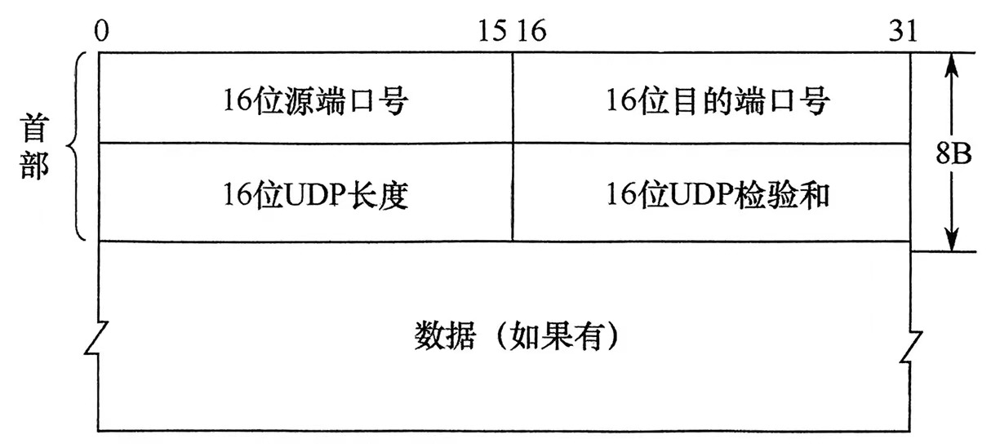
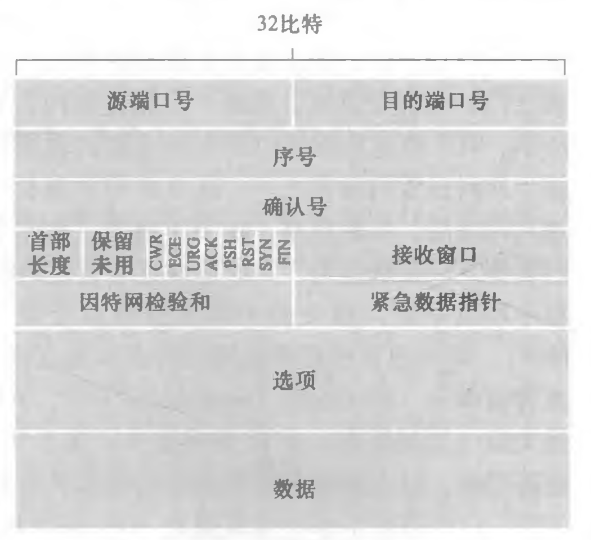
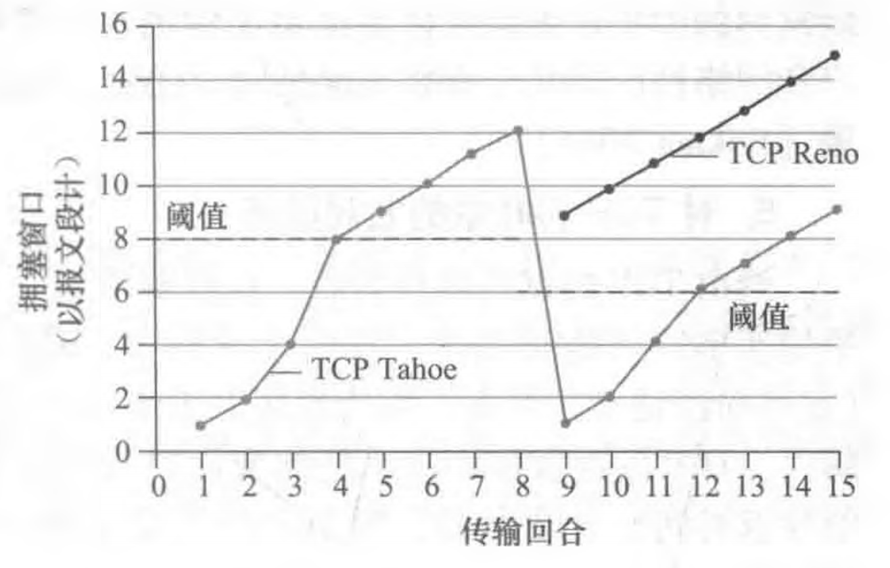
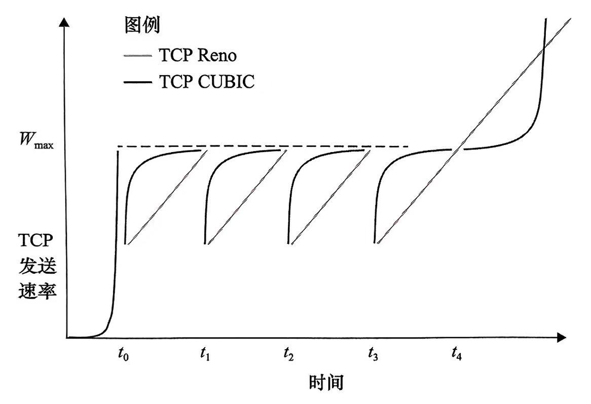

计算机网络知识点整理(3)：传输层
Last updated on June 5, 2025 pm
这是SJTU-CS3611《计算机网络》课程的知识点整理系列。本文整理部分为“第3章：传输层”。
3.1 传输层概述
- 逻辑通信：为不同主机上的应用进程间提供逻辑通信
- 服务协议：
- TCP：面向连接、可靠传输、流量控制、拥塞控制
- UDP：无连接、尽力而为交付
- 核心功能：
- 多路复用与分解
- 差错检测（UDP / TCP）
- 可靠数据传输（TCP）
- 流量控制与拥塞控制
3.2 多路复用与分解
- 基本概念：
- 多路复用：多个应用进程共享传输层服务
- 多路分解：将接收的数据正确交付给目标套接字
- 无连接的实现：
- 使用二元组（目的 IP、目的端口）标识套接字
- 源端口作为“返回地址”
- 面向连接的实现：
- 使用四元组（源IP、源端口、目的IP、目的端口）标识套接字
- 支持并发连接（Web 服务器通过不同四元组区分客户端）
3.3 UDP
3.3.1 优缺点
-
缺点：
- 无确认机制：数据报可能丢失
- 无顺序保证：数据报无序交付给应用
-
优点：
- 无需建立连接：降低 RTT 延迟
- 无需维护连接状态：更简单
- 无拥塞控制：可全力发送数据
- 分组首部开销小
3.3.2 应用场景
- DNS 查询
- SNMP 网络管理
- HTTP/3
- 流式多媒体应用
- 耐损耗
- 对速率敏感
3.3.3 报文段结构

- 长度：包括首部，以字节为单位
3.3.4 差错检测
- 校验和：
- 对所有 16 比特字的和进行反码运算
- 任何溢出都要回卷
3.4 可靠传输
3.4.1 停止-等待
- RDT1.0：经完全可靠信道
- 底层信道完全可靠（无比特错误，无丢包）
- RDT2.0：经具有比特差错信道
- 停止-等待：发送者发送一个数据包，等待接收者响应
- 接收方反馈：采用 ACK / NAK 反馈机制
- 重传：发送者在收到 NAK 时重新传输数据包
- RDT2.1：
- 添加序列号：仅需两个序列号（0 和 1）
- RDT2.2：
- 无 NAK：只使用 ACK 而不使用 NAK
- 接收方必须指定被确认的包的序列号
- RDT3.0：经具有比特差错的丢包信道
- 倒计时计时器：发送方等待一定时间来接收 ACK
- 超时重传：如果在此时间内没有收到 ACK，则重新发送数据包
- 发送方利用率：信道利用率低
3.4.2 回退 N 帧
- 窗口要求：发送窗口长度 （ 为序列号比特位数）
- 累计确认：连续收到多个数据包时，仅返回最后一个数据包的 ACK
- 超时重传：重传超时的数据包及窗口中之后所有的数据包
3.4.3 选择重传
- 窗口要求：发送窗口 = 接收窗口 且 发送窗口 + 接收窗口
- 单独确认：接收方单独地确认所有正确接收的数据包
- 缓存机制：接收方缓存数据包，以便按序交付给上层
3.5 TCP
3.5.1 特点
- 面向连接、可靠有序
- 点对点：一个发送者，一个接收者
- 全双工：双方都设有发送缓存和接收缓存
- 面向字节流：无消息边界，报文段长度受限于 MSS（最大报文段长度）
3.5.2 报文段结构

- 序号：该报文段首字节的字节流编号
- 文件数据根据 MSS 划分成 TCP 报文段
- 确认号：期望的从对方接收的下一字节的序号（累计确认）
- 首部长度：以 4B 为单位
- 确认位 ACK：仅当
ACK = 1时确认号字段有效- 只有
握手1的ACK = 0
- 只有
- 同步位 SYN：
SYN = 1表明这是连接请求或接受报文- 只有
握手1和握手2的SYN = 1
- 只有
- 终止位 FIN：
FIN = 1表明请求释放连接- 只有
挥手1和挥手3的FIN = 1
- 只有
- 选项：用于发送方与接收方协商最大报文段长度（MSS）
3.5.3 超时重传
- 估计往返时间：指数加权移动平均（EWMA）
- 设置重传超时间隔：
3.5.4 可靠传输
- 机制：检验、序号、确认、重传
- 超时重传：
- 推荐仅使用单一的重传定时器
- 超时后下次超时间隔加倍
- 快速重传：冗余 ACK
- 比期望序号大的失序报文段到达，立即发送冗余 ACK
- 如果发送方接收到对相同数据的 3 个冗余 ACK，则执行快速重传
3.5.5 流量控制
- 含义：使发送方的发送速率与接收方的读取速率相匹配，以避免接收方缓存溢岀
- 滑动窗口机制：
- 接收方通告空闲缓冲区大小（以字节为单位）于接收窗口(
rwnd) 字段 - 发送方根据收到的
rcwd值来限制未确认的数据量 - 若收到
rcwd = 0，发送方被阻塞而不能发送数据，发送零窗口探测报文段
- 接收方通告空闲缓冲区大小（以字节为单位）于接收窗口(
3.5.6 连接管理
- 连接建立：三次握手
- 客户端发送 SYN 报文段
SYN = 1，seq = x- 客户端进入 SYN_SENT 状态
- 服务器回复 SYNACK 报文段
SYN = 1，seq = y，ACK = 1，ack = x+1- 服务器进入 SYN_RCVD 状态
- 客户端发送 ACK 报文段
ACK = 1，seq = x+1，ack = y+1- 客户端进入 ESTABLISHED 状态
- 服务器收到确认后，进入 ESTABLISHED 状态
- 可以携带数据
- 客户端发送 SYN 报文段
- 连接释放：四次挥手
- 主动方发送 FIN 报文段
FIN = 1，seq = u- 主动方进入 FIN_WAIT_1 状态
- 被动方回复 ACK 报文段
ACK = 1，seq = v，ack = u+1- 被动方进入 CLOSE_WAIT 状态
- 被动方发送 FIN 报文段
FIN = 1，ACK = 1，seq = w，ack = u+1- 被动方进入 LAST_ACK 状态
- 主动方回复 ACK 报文段
ACK = 1，seq = u+1，ack = w+1- 主动方进入 TIME_WAIT 状态，等待一定时间后进入 CLOSED 状态
- 被动方收到确认后，进入 CLOSED 状态
- 主动方发送 FIN 报文段
3.6 拥塞控制原理
- 含义：防止过多数据注入网络，导致路由器或链路过载
- 拥塞表现：时延增加、丢包率上升
- 拥塞代价：排队时延激增、丢包触发重传、冗余流量占用带宽、上游传输容量浪费
- 控制方法：
- 端到端拥塞控制：
- 无来自网络的显式反馈
- 通过观察到的丢包、延迟推断拥塞
- 网络辅助拥塞控制：
- 路由器向发送方提供关于网络中拥塞状态的显式反馈信息
- 指示拥塞级别或明确设置发送速率
- 端到端拥塞控制：
3.7 TCP 拥塞控制
3.7.1 传统 TCP 拥塞控制
- 拥塞窗口(
cwnd)：限制发送方向网络中发送流量的速率
慢启动
- 初始设置：
cwnd = 1 MSS - 指数增长：
- 每收到一个 ACK，
cwnd增加 1 MSS - 每经过 RTT，
cwnd变为 2 倍
- 每收到一个 ACK，
- 结束条件：
cwnd达到 ssthresh（慢启动阈值）：进入拥塞避免- 出现丢包：将 ssthresh 设置为
cwnd的一半- 发生超时：重新慢启动
- 收到 3 个冗余 ACK：快速重传，并进入快速恢复
拥塞避免
- 初始设置：
cwnd = ssthresh - 线性增长：每个 RTT
cwnd增加 1 MSS - 结束条件：同慢启动中出现丢包情况
快速恢复
- 初始设置：
cwnd = ssthresh + 3 MSS（补偿已离开网络的 3 个报文） - 线性增长：每收到一个冗余 ACK，
cwnd增加 1 MSS - 结束条件：
- 丢失报文的 ACK 到达：进入拥塞避免
- 发生超时：将 ssthresh 设置为
cwnd的一半，重新慢启动
小结
- TCP Tahoe：只要丢包，进入慢启动
- TCP Reno：加入快速恢复，加性增、乘性减（AIMD）

TCP CUBIC
- 仅改变拥塞避免阶段
- 立方规则：拥塞窗口大小
其中， 表示检测到丢包时的拥塞窗口大小， 表示窗口大小再次达到 的未来时间点

TCP 吞吐量
其中， 表示检测到丢包时的拥塞窗口大小
3.7.2 网络辅助明确拥塞通告（ECN）
- 路由器主动标记拥塞状态（IP 首部的
ECN字段） - 接收方通过 TCP ACK 报文段回传拥塞指示（TCP 首部的
ECE标志位）
3.7.3 基于时延的拥塞控制（TCP Vegas / BBR）
- 目的：在丢包出现之前主动检测拥塞
- 核心机制：
- 发送方持续测量 （无拥塞路径）
- 计算无拥塞吞吐量：
- 窗口调整：
- 实际吞吐量接近无拥塞吞吐量：表明链路未满，增大窗口
- 实际吞吐量比无拥塞吞吐量小得多：表明路径拥塞，减小窗口
3.7.4 公平性
TCP 公平性
- 公平性目标：竞争的多条 TCP 连接平等分享瓶颈链路的带宽
- AIMD 机制：理想情况下可以平等分享带宽（要求 RTT 相同）
- 公平性挑战：
- RTT 差异：RTT 较小的连接可抢到更大带宽
- 并行连接：应用使用多个并行 TCP 连接会占用更大带宽
UDP 公平性
- 无拥塞控制：UDP流量不会主动降低发送速率，拥塞时会导致 TCP 流量急剧下降
3.8 快速 UDP 互联网连接（QUIC）
- 基于 UDP 的应用层协议：旨在提升 HTTP 性能
- 主要特征：
- 面向连接和安全：一次握手建立连接、分组加密
- 数据流：一个 QUIC 连接上复用多个应用级数据流
- 可靠且 TCP 友好拥塞控制的数据传输：QUIC 为每个数据流分别提供可靠的数据传输
注：本文中部分图片来自《计算机网络·自顶向下方法》。
计算机网络知识点整理(3)：传输层
https://cny123222.github.io/2025/03/24/计算机网络知识点整理-3-：传输层/